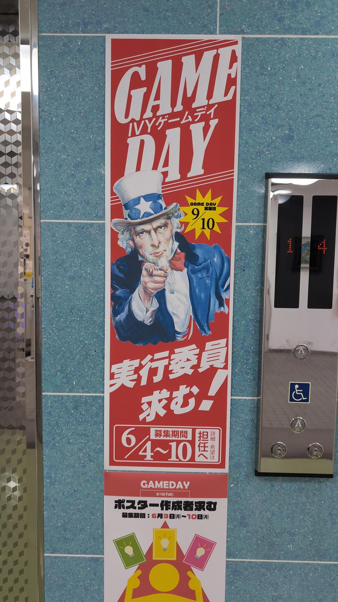
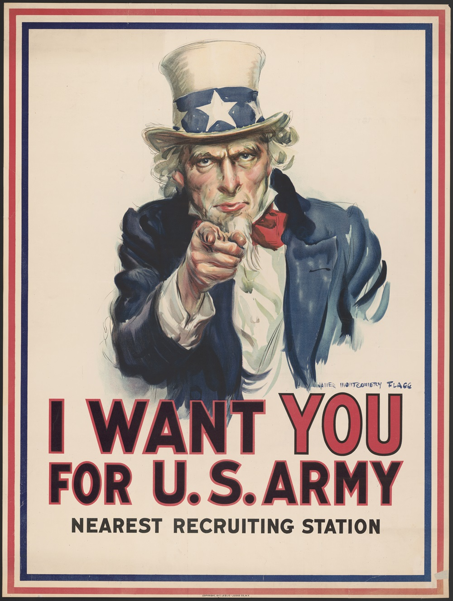
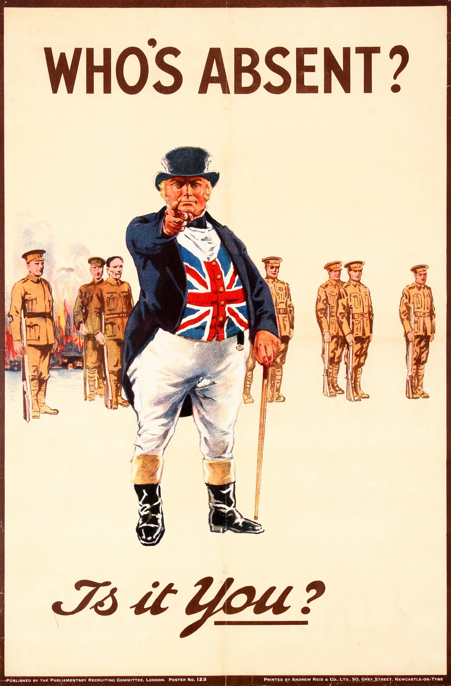

こんな画像を学校で見つけました。
 これは、私が職業訓練で通っているIVY技術工学院の1Fフロアーに掲示されているポスターです。
学校で開催されるゲームデイという企画の実行委員を募集するポスターです。
実はこのポスターに描かれているイラストは、過去の戦争とかかわりがあることはご存じですか？
実はこのポスター元ネタは
 これは第一次世界大戦中の1917年にアメリカの画家でイラストレーターのジェームズ・モンゴメリー・フラッグによって作成されたアメリカ陸軍の募兵広告です。第二次世界大戦にも使いまわされ、多くの国民に軍への志願を呼びかけました。
ポスターには「アメリカ陸軍にはあなたが必要だ。最寄りの募兵事務所へ」と書いています。
さらにこれにも元ネタがあります。
さらに元ネタは
 これは、俗に"キッチナーの募兵ポスター"と呼ばれているものです。
これは、俗に"キッチナーの募兵ポスター"と呼ばれているものです。
キッチナーとは、第一次世界大戦当時、イギリスの陸軍大臣をしていたホレイショ・ハーバート・キッチナー元帥のことで、この人物は大方の人々が考えとは異なり、第一次世界大戦が長期化し史上類を見ない犠牲を伴う戦争になると予想し、自身が指導して大規模な新兵の募集を行いました。この募集に応じ陸軍に入隊した国民は３００万人にも及びます。
ちなみに、指をさしている男性はキッチナー元帥その人です。
ポスターには「ブリトンよ。キッチナーはあなたを必要としている。あなたの国の軍に参加せよ！神よ国王を護り賜え」と書いています。
さらにたくさんの模倣例があります。
これはキッチナーと同じイギリスの募兵ポスターです。
この男性はジョン・ブルといい、擬人化された典型的なイギリス人のキャラクターです。「誰が不参加か？君か？」とのたまい若者の軍への志願を呼びかけています。
製作者
渡邊諒一